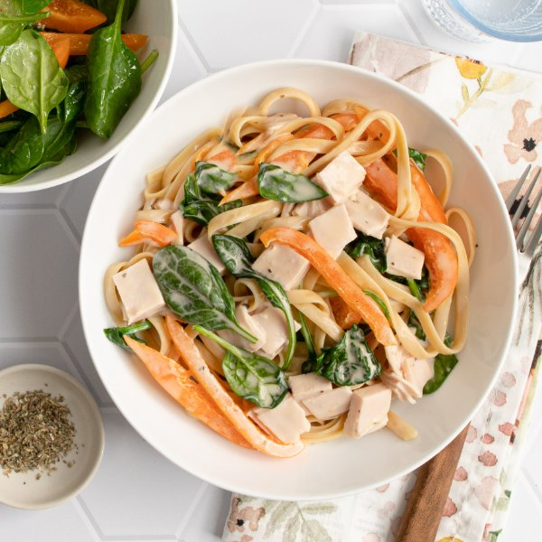

Linguine Alfredo with Deli Turkey, Bell Pepper, Spinach & Side Salad

Prep Time
30 min
Nutrition (per serving)
642.2 kcalCalories
31.5 gProtein
65.5 gCarbs
28.4 gFat
Full nutrition table
| Calories | 642.2 kcal |
| Total fat | 28.4 g |
| Saturated fat | 12.9 g |
| Trans fat | 0 g |
| Cholesterol | 107.8 mg |
| Sodium | 1864.7 mg |
| Carbohydrates | 65.5 g |
| Fiber | 4.5 g |
| Sugars | 9 g |
| Protein | 31.5 g |
| Potassium | 1158.3 mg |
| Calcium | 186.8 mg |
| Iron | 5.3 mg |
| Vitamin A | 196.5 IU |
| Vitamin C | 129.5 mg |
| Vitamin D | 0.8 IU |
Cookware
Ingredients
- 1 (16 oz) jarAlfredo sauce
- 2 (5 oz) pkgsbaby spinach
- ¼ cupItalian salad dressing
- 10 ozlinguine pasta
- 2orange bell peppers
- 16 ozoven roasted turkey breast, sliced
- black pepper
- extra virgin olive oil
- Italian seasoning
- salt
Steps
- Fill a large pot about halfway with hot water (from the tap); cover and bring to a boil over high heat. Uncover, add salt and pasta, and stir for a few seconds. Cook until desired firmness, 8-10 minutes.1 tsp salt
10 oz linguine pasta - Meanwhile, preheat a large skillet over medium-high heat.
- While the skillet heats up, wash, dry, trim, and seed bell peppers; slice lengthwise into thin strips. Place half in a medium bowl and set aside for the salad. (Reserve remaining pepper for the next step.)2 orange bell peppers
- Once the skillet is hot, add oil and swirl to coat the bottom. Add bell pepper and cook, stirring occasionally, until starting to soften, 2-3 minutes.2 tsp extra virgin olive oil
- Meanwhile, wash and dry the spinach (skip this step if it came pre-washed). Add half to the bowl with the bell pepper and set aside. (Reserve remaining spinach for the sauce.)2 (5 oz) pkgs baby spinach
- When the bell pepper is soft, add Alfredo sauce, water, and spices to the skillet. Stir to combine and bring to a simmer.1 (16 oz) jar Alfredo sauce
½ cup water
1 tsp Italian seasoning
½ tsp salt
¼ tsp black pepper - While the sauce is heating, stack turkey slices one on top of another, then medium dice. Add to the skillet and stir to combine.16 oz oven roasted turkey breast, sliced
- Once the sauce is simmering, add remaining spinach to the skillet in handfuls, waiting for the spinach to wilt slightly before adding the next handful. Remove from heat and cover to keep warm.
- When the pasta is done, drain and transfer to the skillet with the sauce; toss to combine. Return to medium heat and continue to cook, tossing occasionally, until sauce coats the pasta, about 1 minute. Remove from heat.
- Add dressing to the bowl with the bell pepper and spinach. Toss to combine the salad.¼ cup Italian salad dressing
- To serve, divide pasta and salad between plates or bowls. Enjoy!